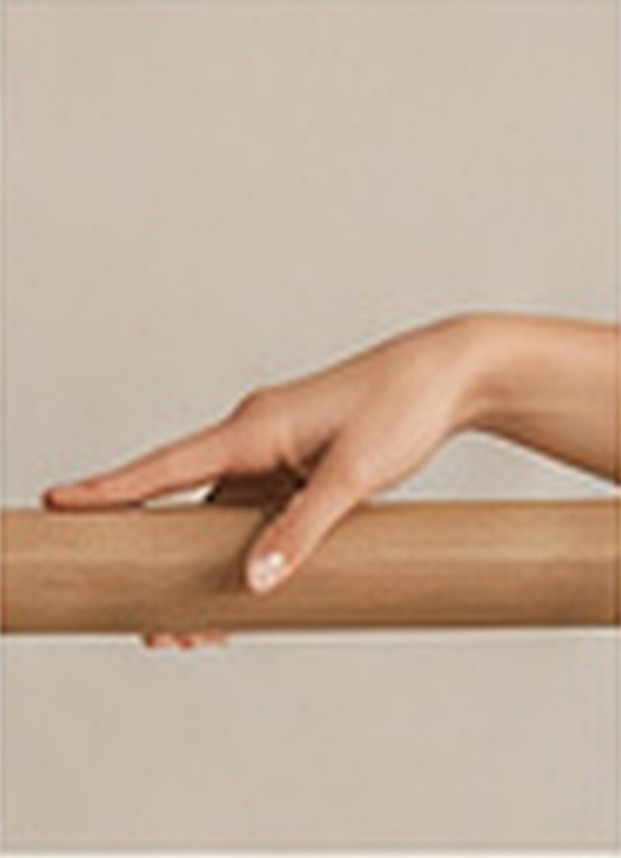
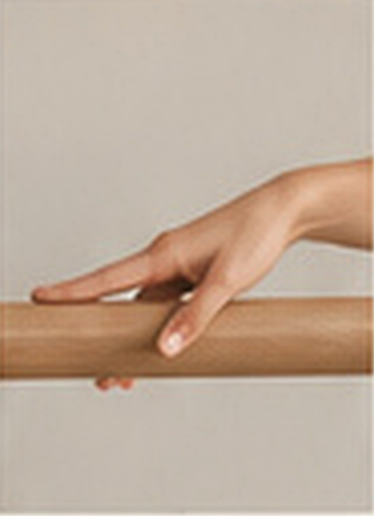
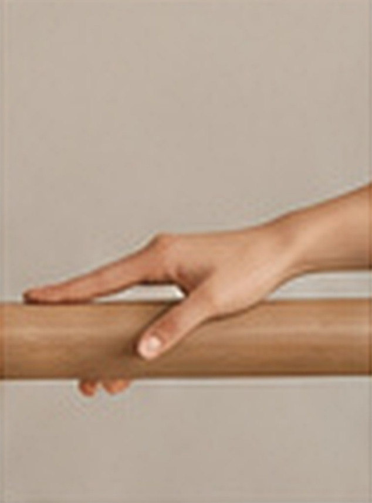
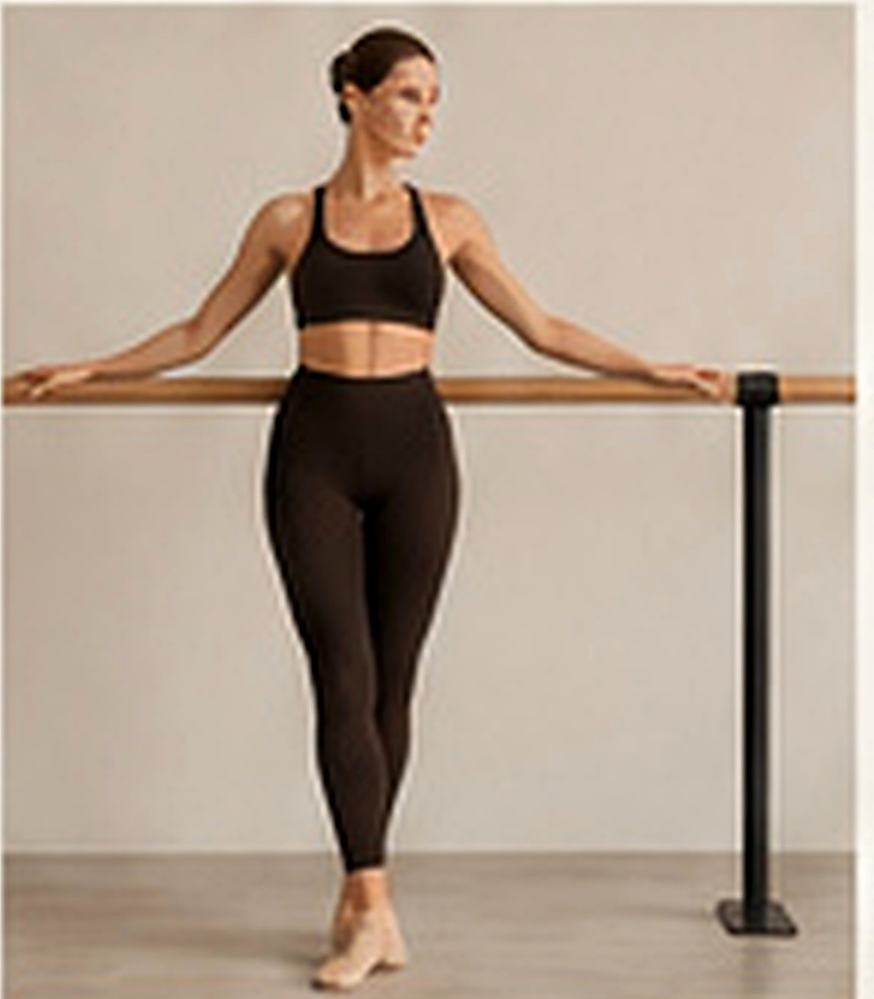
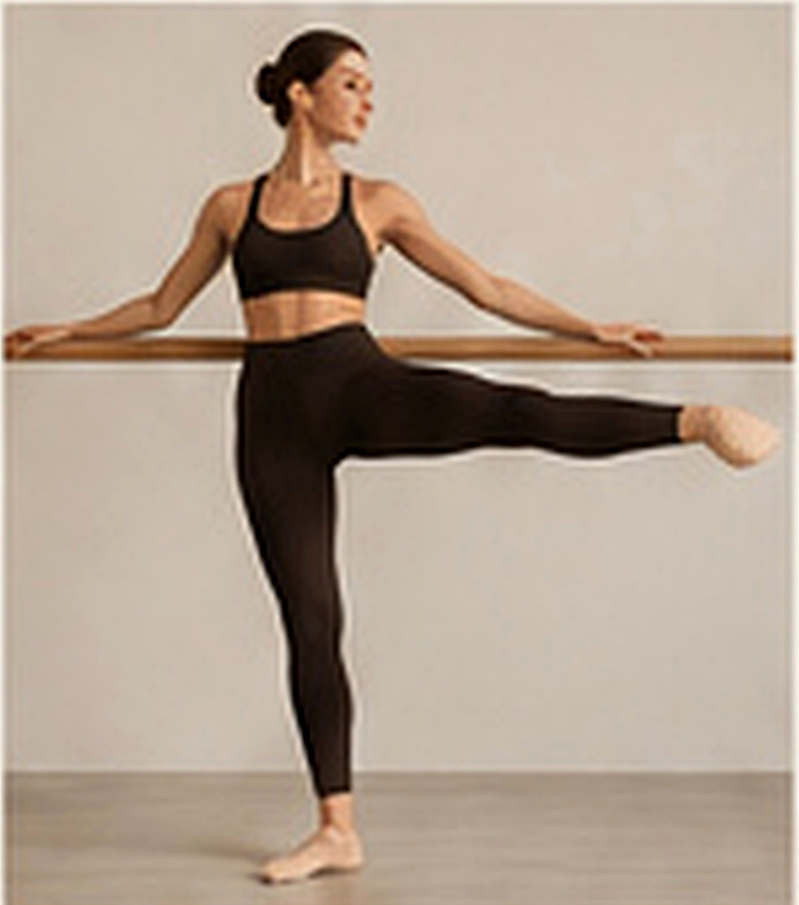
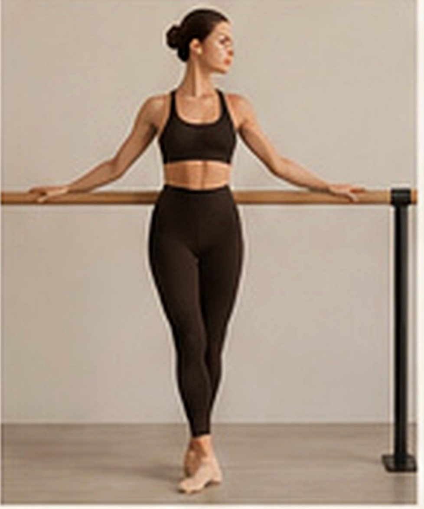
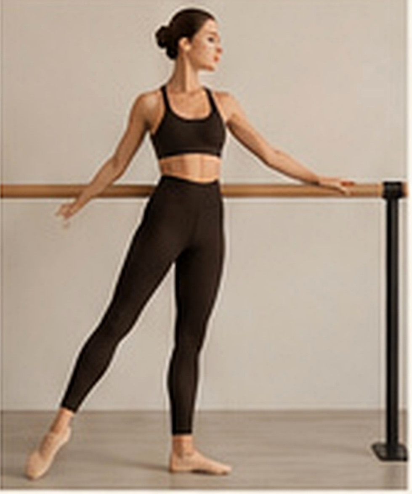
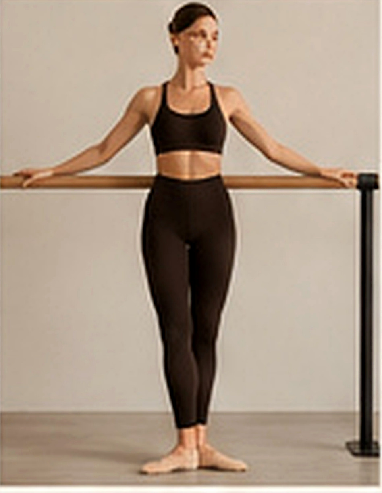
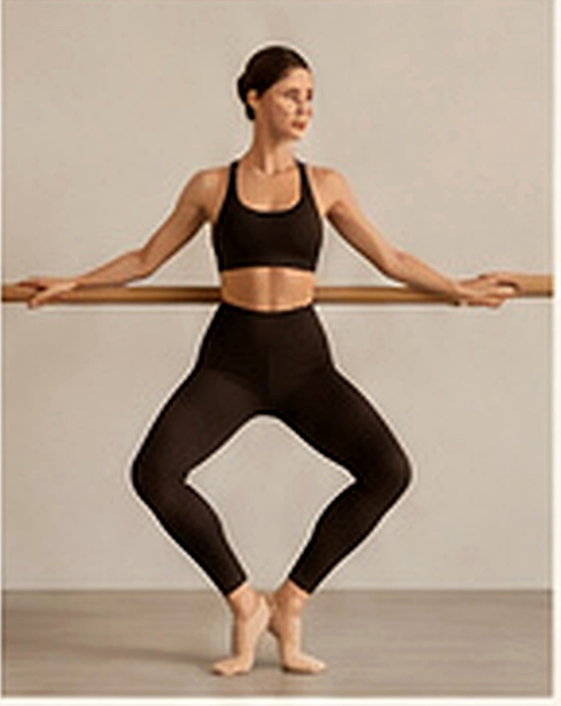

Las manos se apoyan en la barra de forma ligera, sin agarrar, manteniendo la elegancia y la activación del tren superior.
La barra es un apoyo, no un punto de tracción.



La mano acompaña, no tira. Mantén la conexión sin perder la elegancia del movimiento.
Las dos piernas tienen funciones diferentes pero complementarias. La pierna de base soporta el peso del cuerpo y proporciona estabilidad y equilibrio; la pierna de ejecución es la que realiza el movimiento.
La modelo permite identificar visualmente ambas funciones. La persona que imparte la clase debe enseñar primero la estabilidad de la pierna base y después la acción de la pierna de ejecución. Ambas trabajan juntas y tienen la misma importancia dentro del ejercicio.


Saber transferir el peso de forma controlada es esencial para mantener la estabilidad y la fluidez en los ejercicios.
Quien imparte la clase debe guiar el cambio del peso de una pierna a otra sin perder la alineación.


El demi-plié es una flexión ligera de rodillas que activa el tren inferior y prepara para otros movimientos.
Es una posición fundamental en ULA Barre.

